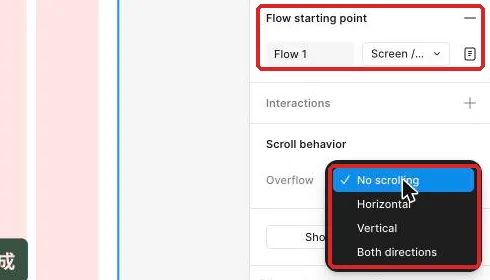
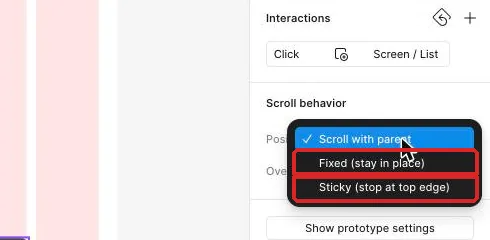

讓長清單能捲動，導覽與漂浮按鈕不擋內容
工作室行政人員要在手機上查看一整天的待辦，同時隨時看得到頁首、導覽與回到頂端的入口。
從可點的任務流程接著做
工作室行政人員已經能從待處理清單進入詳情，也能開啟確認彈窗；當任務增加到十多筆時，新的問題才會出現：手機一次只看得到一小段內容。若把整個手機畫面拉高，畫面會變成一張長海報，行政人員仍然無法在實際手機視窗裡滑到下方的任務。
這堂會接著使用上次做好的清單、詳情、彈窗與底部面板，把清單改成真正能捲動的手機畫面。先從本堂起始材料核對要使用的畫面與圖層，再用完成檢查表記下中段、底部與橫向卡片的檢查結果。完成後，下一次測試整條任務時，就能把「找得到最後一筆」也放進任務，而不是只測第一個畫面。
先分清楚：視窗、內容與固定物件各做一件事
現在先把畫面想成一扇窗。最外層手機 Frame 是窗框，決定使用者一次看見多大的範圍；清單是窗後的長內容，決定有多少資料可以往下移動。內容比窗框高，並且外框設定正確的 Overflow（溢出捲動方式）後，Preview 才會出現垂直捲動。
例如，主線手機外框高 874，清單內容可以因為十二筆任務而超過這個高度。外框仍維持 874，使用者才能在固定高度中往下捲。外框同時開啟 Clip content，編輯畫布會把超出視窗的部分裁在邊界之外；被裁掉的內容仍留在清單裡，進入 Preview 後就能滑到。
接著要分清楚三種 Position（捲動時的位置方式）。Scroll with parent 會跟著父層一起移動，適合清單列與一般內容。Fixed 會一直留在視窗同一個位置，適合頁首、底部導覽與漂浮按鈕。Sticky 會先跟著內容移動，碰到上緣後才暫時黏住，適合分類標題。
| 位置方式 | 一開始捲動時 | 到達畫面邊緣後 | 適合的內容 |
|---|---|---|---|
| Scroll with parent | 跟著清單移動 | 繼續離開畫面 | 任務列、說明文字 |
| Fixed | 留在原來的視窗位置 | 持續固定 | 頁首、底部導覽、漂浮按鈕 |
| Sticky | 先跟著清單移動 | 碰到上緣後停住 | 日期或分類標題 |
這三種方式解決的是「捲動時去哪裡」，不是「在畫布上畫在哪裡」。把標題放在最上方，只能決定起始位置；把 Position 設成 Sticky，才會產生先移動、再黏住的行為。Sticky 只在 Vertical 捲動時有效，而且有效範圍受直接父層限制。分類標題離開父層範圍時也會離開黏住狀態，這讓不同區段可以輪流接手頂端位置。
固定物件還會帶來遮擋。底部導覽與漂浮按鈕留在視窗上方時，清單最後一筆可能已經捲到底，卻藏在它們後面。解法是在清單末尾保留一段空白安全區，讓最後一列還能往上移到可閱讀、可點擊的位置。判斷固定做得對，除了看它有沒有留在原位，也要看被它覆蓋的內容是否仍能完整使用。
示範：把工作室長清單做成真正可捲動的畫面
先集中看完本堂規格。操作時只要引用表中的名稱，就不必在每一步重新記一串座標。
| 圖層或設定 | 主線規格 | 用途 |
|---|---|---|
Screen / List Long（長清單畫面） | W 402、H 874、Clip content | 手機視窗與 Vertical Overflow 的設定層 |
List / Content（清單內容） | x 24、y 110、W 354、高度 Hug、垂直 Auto layout、Gap 12 | 放十二筆以上的任務與底部安全空間 |
Header / Fixed（固定頁首） | x 0、y 0、W 402、H 80、白底 | 顯示「待處理清單」並固定在上方 |
Nav / Bottom（底部導覽） | x 0、y 810、W 402、H 64 | 固定在手機底部 |
Button / Floating（漂浮按鈕） | x 330、y 730、W 48、H 48 | 固定在右下並回到清單頂端 |
Spacer / Bottom（底部安全空間） | W Fill、H 120 | 讓最後一筆能移到遮擋區上方 |
Section / Sticky（黏頂分類標題） | W 402、H 48、起始 y 180 | 先捲動，再黏在父層頂端 |
Scroll / Horizontal（橫向卡片視窗） | W 354、H 160、Clip content | 顯示橫向卡片的一部分 |
| 橫向卡片內容 | 三張卡片，各 W 200、H 140、Gap 12、總寬 624 | 測試 Horizontal Overflow |
- 複製原本的清單畫面並命名為
Screen / List Long（長清單畫面）；畫布上會同時保留短清單與新畫面。 - 將長清單外框設成表中的手機尺寸；右側會顯示固定寬高，畫面比例維持原本的手機視窗。
- 在
List / Content增加任務列，直到內容超出外框下緣；畫布上會看見清單延伸到視窗之外。 - 在其中兩列填入較長的任務名稱；任務列會依先前的 Auto layout 規則向下增高。
- 選取長清單最外層並開啟 Clip content；畫布上只顯示手機邊界內的部分。
- 切到 Prototype 分頁，在 Scroll behavior 的 Overflow 選 Vertical；右側會顯示垂直捲動設定。

- 按 Shift+Space 開啟 Preview；預覽會留在編輯器內並顯示手機畫面。
- 在清單上向下捲動；後面的任務會依序進入視窗。
- 捲到最底部；最後一筆會出現，並且外層手機仍維持原來的高度。
有了真正的捲動，接著加入固定頁首。選取 Header / Fixed 後，在同一區的 Position 選 Fixed。設定完成時，Figma 會把固定物件移到其他圖層上方，Layers 也會出現 Fixed 標示，這是預期的層級變化。再次進入 Preview，頁首應在清單移動時留在視窗頂端。

同樣的方法可以用在 Nav / Bottom 與 Button / Floating。底部導覽固定後，行政人員捲到任何位置都能看見目前所在頁。漂浮按鈕固定後，長清單中段也保有回到上方的入口。若長清單外層使用 Auto layout，先對固定物件啟用 Ignore auto layout，物件才可以保留獨立位置。
漂浮按鈕還需要一個明確目的地。選取按鈕，建立 On click 互動，Action 選 Scroll to，目的地選 List / Content。這個圖層是捲動畫面的直接子層，所以能從目的地下拉選單找到。進入 Preview 並先捲到中段，再按漂浮按鈕；畫面會回到清單內容的起點。
最後處理底部遮擋。在 List / Content 最後新增 Spacer / Bottom，並套用表中的高度。再次捲到底時，安全空間會進入底部遮擋區，最後一筆則停在導覽與漂浮按鈕上方。這時要同時讀完最後一筆文字，也要能點到該列的動作。
跟著做：比較 Fixed、Sticky 與橫向捲動
示範已經完成一條可捲動的長清單，現在用較少提示做三個對照。每完成一個對照，就回 Preview 觀察實際移動，不只看右側設定值。
- 先讓固定頁首、底部導覽與漂浮按鈕在長清單中段保持原位；請從 Position 找到適合的設定。
- 再捲到最底部檢查最後一列；請調整清單末端的安全空間，直到文字與動作都露出。
- 接著複製長清單畫面作為 Sticky 比較；新畫面會保留原本的垂直捲動內容。
- 移除比較畫面中的固定頁首；視窗頂端會空出觀察黏頂標題的位置。
- 在清單前段加入
Section / Sticky並填入「今日任務」；分類標題會位在一段一般內容之後。 - 將分類標題的 Position 改成 Sticky；Layers 與右側會反映新的位置方式。
- 進入 Preview 向下捲；分類標題會先移動，碰到視窗上緣後才停住。
- 把分類標題移進一個較短的父 Frame；繼續捲動時，它會在父層離開後一起離開。
- 將分類標題放回原本的長內容父層；黏住的有效範圍會恢復。
看懂垂直捲動後，再做一個橫向卡片區。建立 Scroll / Horizontal，並依規格表設定視窗。把三張卡片放進水平 Auto layout，再將外框的 Overflow 選 Horizontal。Preview 中左右滑動時，第一張與最後一張都要能完整出現；主清單仍維持 Vertical，兩個方向各自服務不同內容。
最後做一次位置說明。請用自己的話記錄：Fixed 從捲動開始就留在視窗原位；Sticky 先隨內容移動，碰到上緣才停；Horizontal 讓寬內容在固定寬度中左右瀏覽。能說出畫面變化，代表你是在判斷行為，而不是只背選單名稱。
看兩版長清單，判斷哪一版真的能用
版本一的手機外框高 874，清單內容超出下緣。頁首與底部導覽在捲動時保持原位，清單末端有一段空白。捲到底後，最後一筆完整停在底部導覽上方，漂浮按鈕也沒有蓋住動作。
版本二把手機外框直接拉高，直到十二筆任務全都出現在畫布上。預覽第一眼能看到上方內容，頁首也畫在最上面，但手機視窗內沒有可捲動的長內容。最後一筆離開一般手機可見範圍，底部導覽則留在整張長畫布的最下方。
哪一版比較符合行政人員使用手機查看長清單的情境？請先指出「視窗高度」「內容是否超出」「固定元素」與「最後一筆」四個線索，再展開理由。
看判斷理由
版本一較好。它保留手機視窗高度，讓清單內容超出並使用垂直捲動；固定元素在中段與底部仍可使用，安全空間也讓最後一筆避開遮擋。版本二只是把畫布加長，沒有解決手機視窗內如何讀完資料的問題。
再比較一組分類標題。版本一的「今日任務」一開始位於清單中段，捲到上緣才停住，下一個分類離開父層時會接替它。版本二的「今日任務」從預覽開始就一直留在最上方，與頁首重疊。哪一版呈現的是 Sticky？
看判斷理由
版本一呈現 Sticky，因為分類標題先跟著內容移動，到達上緣後才黏住，並且受父層範圍限制。版本二從開始就固定，更接近 Fixed，而且重疊也會降低標題可讀性。
卡住時，先看現象再找設定層
| 看到的現象 | 通常的原因 | 怎麼修 |
|---|---|---|
| Preview 完全無法上下捲 | 清單內容仍在外框高度內，或 Overflow 設在任務列 | 保留手機外框高度，讓 List / Content 超出，再選最外層設定 Vertical |
| 頁首跟著清單離開 | Position 仍是 Scroll with parent | 選 Header / Fixed，在 Scroll behavior 改成 Fixed |
| Fixed 選項無法產生預期位置 | 固定物件仍受外層 Auto layout 排列 | 對該物件啟用 Ignore auto layout，再回 Preview 核對 |
| 最後一筆被底部導覽蓋住 | 清單末端沒有足夠安全空間 | 增加 Spacer / Bottom，捲到底後確認文字與動作都露出 |
| Sticky 一下就離開 | 分類標題的直接父層太短 | 把它放回涵蓋整段分類內容的父層，再測有效範圍 |
| 橫向卡片無法左右滑 | 卡片總寬沒有超過外框，或 Overflow 設錯層 | 核對內容確實比外框寬，並在 Scroll / Horizontal 設 Horizontal |
換你做：報名確認 App
活動主辦單位的行政人員要在 360×800 的手機上逐筆確認十二筆報名資料。你已經有一路做好的報名清單、詳情、確認彈窗與底部導覽，現在要讓完整清單能捲動，並且在任何位置都找得到頁首與導覽。請使用報名資料，讓最後一筆劉思妤的資料成為這次檢查的終點。
要達成的條件：
- 手機外框維持 360×800，十二筆報名資料放在會超出視窗的內容層。
- 清單能從第一筆捲到劉思妤那筆，姓名、備註、狀態與可用動作都能完整看見。
- 頁首與底部導覽在清單中段及底部都留在原位。
- 漂浮按鈕不遮住姓名、備註、狀態或動作，並能把清單帶回頂端。
- 清單末端保留由你判斷的安全空間，尺寸依實際遮擋結果調整。
- 用一個分類標題比較 Sticky 與 Fixed，並寫下一句差異。
合格的結果要通過以下自我檢查：
- 從清單頂端開始向下滑，內容真的移動，手機外框沒有跟著變高。
- 在中段停下時，頁首、底部導覽與漂浮按鈕仍位於預期位置。
- 捲到底時，劉思妤那筆「最後一筆測試資料」可以完整讀完。
- 點漂浮按鈕後，畫面回到清單內容的起點。
- 將 Preview 關閉再重開，捲動方向與固定位置仍一致。
真的卡住再看：提示
先分別選取手機外框、長內容與固定物件，確認 Overflow 設在外框、內容確實超出、Position 設在要留住的物件；最後再調整清單末端的空白。
收好長清單，下一步用任務找問題
工作室行政人員現在可以在固定高度的手機視窗裡看完整份待處理清單。頁首、底部導覽與漂浮按鈕各自留在合適的位置，分類標題也會在需要時黏住。更重要的是，最後一筆不會消失在固定元素後方，橫向卡片也能在有限寬度裡瀏覽。
下一堂會拿這條包含登入、長清單、詳情、確認與完成結果的流程來做單人任務測試。你會先隔開一段時間，再只看任務卡操作，記下猶豫、點錯與看不懂的地方；長清單的中段、底部與回頂行為都會成為檢查項目。
完成條件：
- 工作室長清單能在 402×874 的視窗內捲到最後一筆。
- 固定頁首、底部導覽與漂浮按鈕在中段及底部都不遮擋內容。
- Sticky 分類標題會先移動再黏住，並受直接父層範圍限制。
- 橫向卡片可以從第一張滑到最後一張。
想一想：如果固定頁首沒有遮住文字，但遮住了任務列的點擊區，這個畫面算完成嗎？
看參考答案
還需要調整。固定元素的檢查同時包含可閱讀與可操作；請改清單起始位置或安全空間，再從中段與底部實際點一次受影響的任務列。
本堂查證來源
來源查證：2026-11-02。